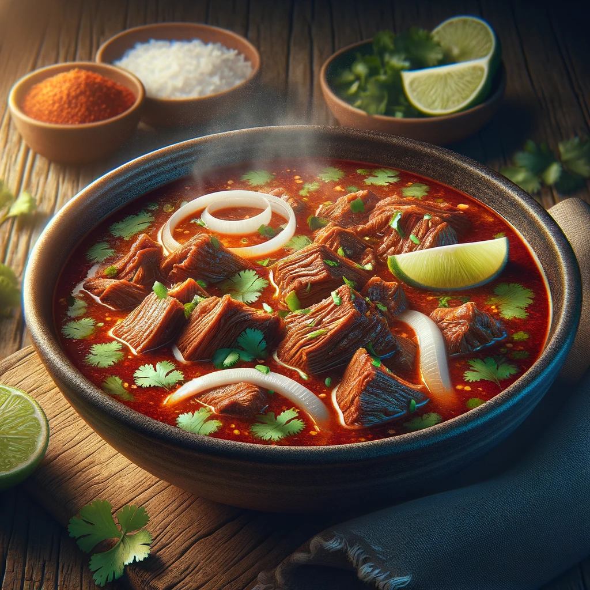

Birria

Instructions
Ingredients
- For the Meat:
- 2-3 lbs of goat, beef, or lamb (cut into chunks)
- Salt, to taste
- For the Sauce:
- 5 dried Guajillo chiles
- 3 dried Ancho chiles
- 1 dried Chipotle chile (optional for extra heat)
- 4 cloves of garlic
- 1 medium onion, quartered
- 1 teaspoon ground cumin
- 1 teaspoon dried oregano
- 1/2 teaspoon ground cloves
- 1/2 teaspoon ground cinnamon
- 1/4 teaspoon ground ginger
- 2-3 cups beef or chicken broth
- 2 tablespoons apple cider vinegar
- Salt and pepper, to taste
- For Serving:
- Chopped cilantro
- Diced onion
- Lime wedges
- Corn tortillas
Steps
- Prepare the Chiles:
- Remove stems and seeds from the dried chiles.
- Toast them lightly in a dry skillet over medium heat until fragrant.
- Soak the toasted chiles in hot water for about 20-30 minutes until they are softened.
- Make the Sauce:
- In a blender, combine the softened chiles, garlic, onion, cumin, oregano, cloves, cinnamon, ginger, and some of the broth.
- Blend until smooth. Strain the sauce through a sieve to remove any solids.
- Stir in the apple cider vinegar, and season with salt and pepper.
- Cook the Meat:
- Season the meat with salt.
- In a large pot, brown the meat chunks over high heat.
- Once browned, add the prepared sauce to the pot, along with enough broth to cover the meat.
- Bring to a boil, then reduce heat to a simmer.
- Slow Cook:
- Cover and simmer on low heat for 3-4 hours, or until the meat is very tender.
- The sauce should be rich and flavorful. Adjust seasoning if necessary.
- Serve:
- Serve the birria in a bowl with some of the broth.
- Garnish with chopped cilantro, diced onion, and a squeeze of lime.
- Warm corn tortillas are typically served on the side.